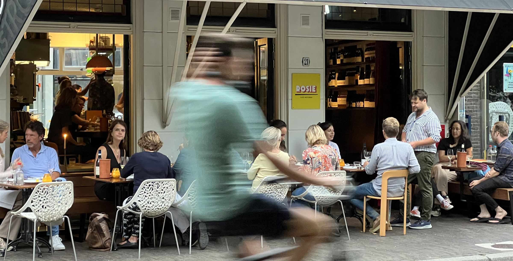
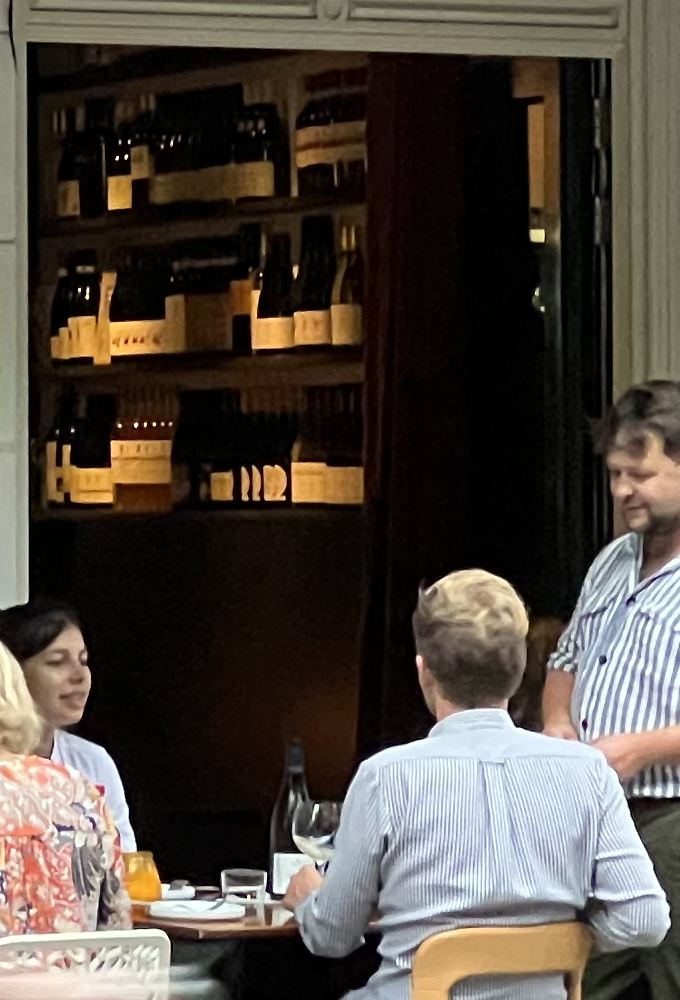

A whole lotta Rosie.
In hartje Utrecht.
Rosie swingt, Rosie blinkt; she’s the rainbow child. Robuust en stijlvol op het bord en in het glas. Van twaalf tot twaalf.
Stoer, eigenwijs en net een beetje anders
Aan het Lucasbolwerk, met uitzicht op het Zocherpark en de Singel, zit Rosie. Rosie is stoer en zelfverzekerd, staat met beide benen op de grond, is behoorlijk eigenwijs en net een beetje anders.
Rosie houdt van goed eten, een knap glas wijn en geniet daarvan wanneer het háár uitkomt. Muziek vindt ze belangrijk en qua uiterlijk heeft ze een fraaie stijl; verzorgd, een tikkeltje deftig, beetje nonchalant en eerder tijdloos dan modieus. Ze mag gezien worden, op elk moment van de dag. En hé, Rosie weet dat.
Café Restobar Rosie is een horecazaak van chefkok Jac Rijks en gastheer Yora Galjaard. Een stijlvolle en tijdloze eetbar voor lunch, borrel en diner, met een moderne en wisselende kaart vol robuuste gerechten, prachtige wijnen en veel aandacht voor mooie, duurzame en unieke producten. Het draait hier om betaalbare kwaliteit, muziek en gastvrijheid.

‘Bij Café Restobar Rosie in Utrecht hebben ze het eten tot in detail briljant uitgevoerd’
‘Rosie in Utrecht heeft supergoeie smaak’
De kaart
Robuuste gerechten, stijlvol op het bord. De kaart wisselt, dus vraag aan tafel gerust wat er vandaag op staat.
The French Dip
12brioche, entrecôte, kalfsjus, augurk
Kalfsragout
10zuurdesem toast, kruidensalade
met kalfszwezerik + 6.5Brioche toast kaas & ui
14zwarte vijg, appel, ricotta
Radichio
14kalfskop, ansjovis, kappers, hersensaus
Tomaat
15ajo blanco, abrikoos, amandelolie
Andijvie van de plancha
12geroosterde look, pecan noten, pecorino
Caesar salade
16ingelegde sardines, kapperblad, spiering
Bacon dashi
16krielaardappel, kokkels, bleekselderij
Falafel
12tzatziki, kruidensalade
Garnaalkroketten
16peterselie & citroen
Suikermais & bloemkool
17saffraan, romanesco, komkommer
Koolrabi
17mosterdkool, chimichurri, Opperdoezer Ronde
Heilbot
25cantharellen, truffel, geroosterde prei
Zwarte beuling van slagerij Beyens (BE)
17stoemp, jus, appelmoes
Cote de boeuf van West-Vlaams rund
32toast kannibaal, salade van mergvinaigrette, mierikswortelboter
Vers gedraaid vanille-ijs
14ricotta cake, sabayon
Tartelette
9citroen of chocolade & blauwe bes
Colonel
9gin & triple sec, sinaasappelsorbet
Brood
Halve baguette
5.25en levercrème of boerenboter, tapenade, reuzel
Vleeswaren per 50 gr
Duroc ham
7Morcilla
6Sbriciolona
7Mortadella di Prato
7Drie soorten wisselende kaas
dagprijsper 50 gr
Uit de zee
Irish Mór nr 4
4.5per stuk
Zeeuwse creuse nr 3
3per stuk
Sashimi
dagprijssoya-vinaigrette, wasabi
Warm
Bitterballen procureur
84 stuks
Uit blik
Bonito del Nort Ortiz bio
12en toast tomaat, per blik
Sardinillas Casa Santona
12en toast tomaat, per blik
Erbij
Olijven anchoa
3per blik
Olijven Arbequina, Priorat
4.5per 100 gr
Artisjok violetta
6per stuk
Gezouten amandelen
6.5per 100 gr
Prijzen in euro’s. Heb je een allergie of dieetwens? Zeg het even bij het bestellen.


Reserveren
Je kan bij Rosie reserveren voor lunch, borrel of diner.
- Diner Voor het diner werken we in principe met één shift, zonder eindtijd. Is het vol, dan kan je soms nog terecht met een reservering mét eindtijd.
- Hoog of laag Je kan kiezen uit hoge zitplekken aan de eetbar of lage tafels. Geef je voorkeur gerust aan.
- Met meer dan 6 personen? Bel of mail ons, dan kijken we samen wat er kan.
- Terras Het terras wordt niet gereserveerd: kom gewoon langs.
Online reserveren
Hier komt jullie eigen reserveringswidget, met alle opties en tijden die nog beschikbaar zijn.
Bel 030 369 0786 Mail info@rosieutrecht.nl
Geef een volgend rondje bij Rosie
Geef een vriend, familie of collega een etentje cadeau. Samen aan tafel, op de avond die de ander kiest.
- Kies op rondje.nl een cadeau en zet ‘Uit eten bij Rosie’ erop. Je stelt zelf een paar data voor.
- Rondje, een Utrechts bedrijf, drukt het en stuurt het op: als echte kaart of als Tony’s-reep met eigen wikkel.
- De ontvanger scant de code, kiest een datum en reserveert bij ons.
Met meer dan 6 personen? Bel even: 030 369 0786.
De band
Café Restobar Rosie wordt gerund door een team van 30 ambitieuze en gemotiveerde, veelal jonge horecamensen. Elke dag wordt er samengewerkt en gebouwd aan deze bijzondere zaak. Rosie is altijd in beweging!
- Jac Rijkschef
- Yora Galjaardgastheer
- Twan Schenkels
- Jorrit Kuijper
- Demy van de Poll
- Anton Rijks
- Ignáce Maré
- Aart de Vente
- Claire de Jong
& met onze leveranciers…
Lindenhoff, Goede Vissers, W&A Fish, L’Empereur Boucherie Française, Bredase Horeca Vleescentrale, De Veldkeuken, Vanila Ventue, TasteTree, Buon Appetito, de Goey-Koot, Bidfood, Min Zeven, KEEN Coffee, BioThee, Nectar, Pieksman Wijnimport, Vleck Wijnen, De Geluksdruif, de Wijnwinkel, Zuiver, de Wijntherapeut, Yuri Koster, Smaragd Wijnen, Wijn & Whisky, Bier Atelier Renes, Doggerland Craft Cider, the Sisters Brewery, Lowlander Beer, KRNWTR + en Platomania.
Rosie zoekt altijd bandleden
In de keuken, in de bediening en aan de spoel. Ervaring is niet nodig. Loop gerust eens binnen aan het Lucasbolwerk.
Volg Rosie op Instagram
Daar deelt Rosie wat er speelt: wijnreizen met Pieksman, nieuwe kunst aan de muur, een Izakaya-avond, groenten van de eigen tuinder en natuurlijk de nieuwe gerechten op de kaart.
Kom langs
Café Restobar RosieLucasbolwerk 21
3512 EJ Utrecht
- Open
- 12.00 – 24.00, bij drukte tot later
- Keuken
- lunch, borrel en diner